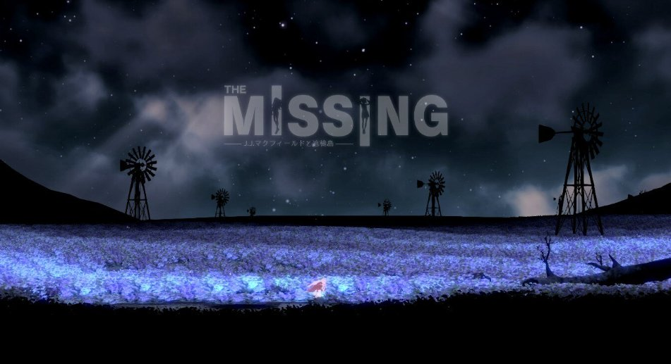

虽然收藏很久了，但今天第一次玩
感动，以及感触非常大
对于自己而言代入感极强，可能因为主角和自己之间具有太强的相似性了吧：都是得到了身边的支持的，都是有稳定的恋人陪伴的，甚至还都是有随身携带的玩偶的…总而言之，都是“不应该自杀”的
但也都有过付诸实施的自杀经历的…

感动，以及感触非常大
对于自己而言代入感极强，可能因为主角和自己之间具有太强的相似性了吧：都是得到了身边的支持的，都是有稳定的恋人陪伴的，甚至还都是有随身携带的玩偶的…总而言之，都是“不应该自杀”的
但也都有过付诸实施的自杀经历的…

大力推荐 The MISSING: J.J. Macfield and the Island of Memories！同样是跨性别主题的游戏，这个更和我心意。
虽然只有极少数细节能够暗示主角的真实身份，且剧情到最后都没有直接揭示这一点，但是这整个游戏无疑都是围绕性别焦虑、身体、羞耻以及死亡与重生的。 https://t.co/BxqpIGqP8O
虽然只有极少数细节能够暗示主角的真实身份，且剧情到最后都没有直接揭示这一点，但是这整个游戏无疑都是围绕性别焦虑、身体、羞耻以及死亡与重生的。 https://t.co/BxqpIGqP8O